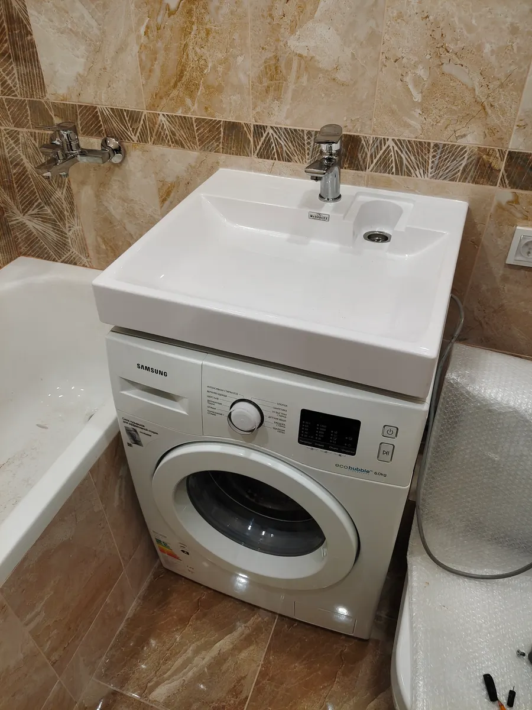
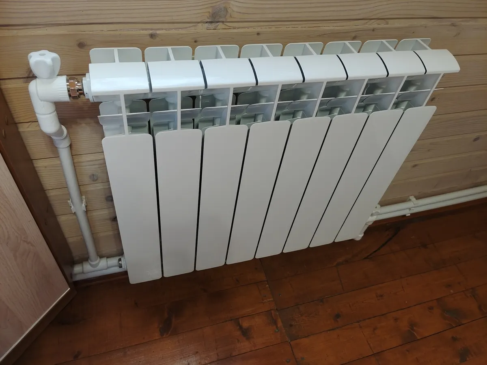
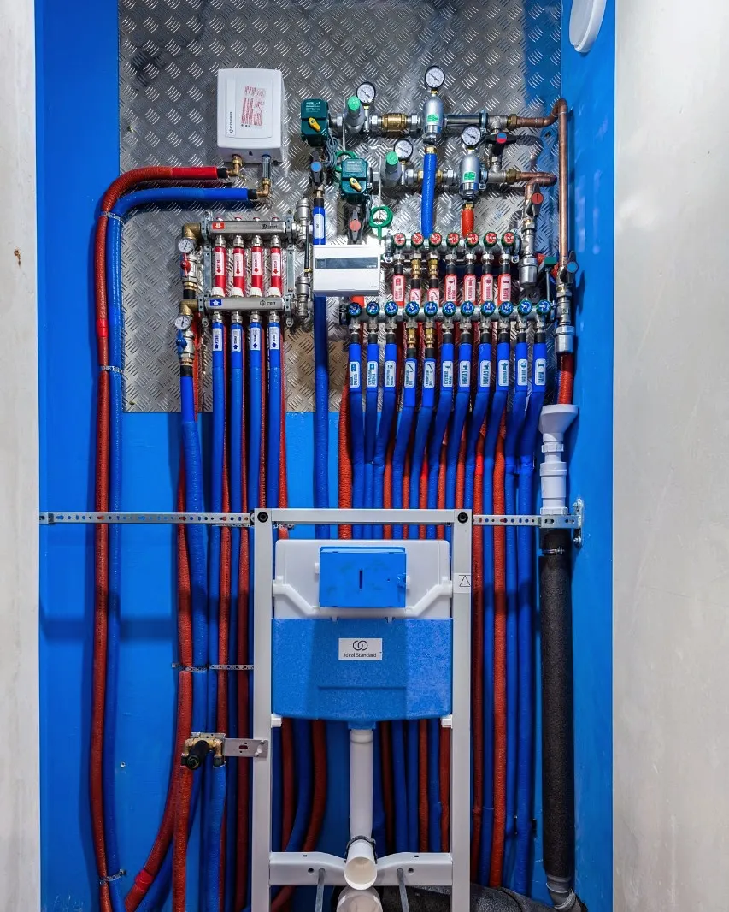

Сантехника · электрика · Москва
Сантехник и электрик на дом в Москве
Засоры, смесители, батареи, розетки, аварийный выезд. Работаем круглосуточно, прочищаем канализацию профессиональным оборудованием.
- Работаем круглосуточно
- Рейтинг 4,9 на Яндекс.Картах, 66 отзывов
- Аварийная служба: канализация и электрика
Цены на работы
Цены из прайса на карточке в Яндекс.Картах. Итог зависит от сложности работы и деталей.
Сантехника и засоры
- Вызвать сантехника на домвыезд и осмотр1 000 ₽
- Замена смесителя или крана2 500 ₽
- Устранение засора в раковиневанная, умывальник3 000 ₽
- Устранение засора унитазабез снятия3 990 ₽
- Прочистка канализациипрофессиональное оборудование4 000 ₽
- Видеоинспекция канализациинаружной и внутридомовой5 000 ₽
Отопление, электрика
- Замена батарей отопленияна сварке или полипропилене7 000 ₽
- Замена розетки или выключателя1 000 ₽
- Замена люстры, бра, светильников2 500 ₽
- Аварийный электриксрочный выезд, все районы Москвы500 ₽
- Замена проводки в квартирепод ключ4 000 ₽
- Монтаж отопления в частном домеМосква и Московская областьот 50 000 ₽
Цены с карточки на Яндекс.Картах, они давно не обновлялись. Точную стоимость называют при заявке.
Как заказать
- 01
Заявка
Пишете в WhatsApp или звоните: что случилось, адрес, удобное время.
- 02
Время и цена
Согласуете, когда приедет мастер, и стоимость работы.
- 03
Приезд
Мастер приезжает в согласованное время с оборудованием.
- 04
Работа
Прочистка, замена или монтаж – по вашей заявке.



Что пишут клиенты
Быстро
Отзыв: «приехали в течении двух часов и справились с проблемой буквально за полчаса».
Серьёзное оборудование
Отзыв: «много профессионального оборудования по засорам».
Чисто и тихо
Отзыв: «никакого шума, грязи или неудобств для нас».
Квартиры, дома, торговые центры
Отзывы: засоры в квартире, частном доме и торговом центре.
Отзывы с Яндекс.Карт
«Хочу выразить благодарность за оперативную и качественную работу компании Подручный мастер. Были сильнейшие засоры, казалось бы, безнадежная ситуация, но ребята справились отлично. Они быстро определили причину проблемы и эффективно устранили её буквально за считанные минуты. Никакого шума, грязи или неудобств для нас . Рекомендую.»
Надежда Литорович · 20 ноября 2025
«Устранили засор в квартире моментально! После вызова приехали в течении двух часов и справились с проблемой буквально за полчаса. Чётко отлаженная работа 👍 Высший уровень! Ребята молодцы, профессионалы!»
Павел Z · 14 августа 2025
«Вызывал сантехника для прочистки канализации в торговом центре . Был сильный засор . Метро Цветной бульвар . Ребята справились с задачей на 5+ . По цене не дорого . Вежливые и доброжелательные мастера .Все оборудование профессиональное ! Смело рекомендую !»
Антон Пахомов · 23 мая 2025
Отзывы с карточки на Яндекс.Картах, без правок.
Частые вопросы
Сколько стоит вызов?
Вызов сантехника на дом – 1000 ₽ по карточке на Яндекс.Картах. Стоимость работы называют при заявке.
Когда можно вызвать?
Карточка указывает круглосуточный режим работы, аварийная служба принимает срочные вызовы.
Работаете в частных домах и за городом?
В прайсе есть устранение засоров в частных домах с выездом за МКАД и монтаж отопления в Москве и области.
Как оплатить?
На карточке указаны наличные, оплата картой и банковский перевод.
Напишите, что случилось, и когда удобно
- Адрес
- Москва, улица Большая Ордынка, 25, стр. 2, Москва
- Часы
- Круглосуточно
- Телефон
- +7 (964) 701-87-23